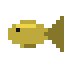
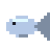
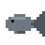

Peixes
Escolha a vara na barra, fique de frente para a água e aperte E. Quando aparecer o “!”, aperte de novo e mantenha o peixe dentro da barra até a linha encher. O Seu Joca vende iscas no píer e o Manual do Pescador deixa a barra 30% maior.
| Peixe | Valor | Onde | Estações | Horário | Dificuldade |
|---|---|---|---|---|---|
| Lambari | $25 | Lago | Ano todo | 6h–20h | |
| $30 | Mar (píer e praia) | Ano todo | 6h–2h | ||
| $35 | Lago | Ano todo | 6h–2h | ||
| $45 | Mar (píer e praia) | Ano todo | 6h–20h | ||
| $50 | Lago | Ano todo | 6h–2h | ||
| $60 | Mar (píer e praia) | Primavera, Verão | 10h–18h | ||
| $70 | Mar (píer e praia) | Verão, Outono | 6h–2h | ||
| $75 | Mar (píer e praia) | Ano todo | 6h–20h | ||
| $85 | Lago | Ano todo | 19h–2h | ||
| Linguado | $90 | Mar (píer e praia) | Verão, Outono | 6h–2h | |
| $95 | Lago | Primavera, Inverno | 6h–20h | ||
| $110 | Mar (píer e praia) | Ano todo | 18h–2h | ||
 Tucunaré | $120 | Lago | Verão, Outono | 6h–19h | |
| $130 | Lago | Outono, Inverno | 19h–2h | ||
| $140 | Mar (píer e praia) | Verão, Outono | 18h–2h | ||
| $150 | Mar (píer e praia) | Primavera, Outono, Inverno | 6h–2h | ||
| $180 | Mar (píer e praia) | Outono, Inverno | 6h–19h | ||
 Peixe-Espada | $220 | Mar (píer e praia) | Ano todo | 6h–2h | |
| $320 | Lago | Verão | 10h–18h | ||
| $700 | Lago | Outono | 21h–2h | ||
| $900 | Mar (píer e praia) | Inverno | 21h–2h | ||
| $170 | Alto-mar (barco da Marina) | Ano todo | 6h–2h | ||
| $210 | Alto-mar (barco da Marina) | Ano todo | 6h–21h | ||
 Cação | $230 | Alto-mar (barco da Marina) | Ano todo | 18h–2h | |
| $260 | Alto-mar (barco da Marina) | Ano todo | 6h–2h | ||
| $300 | Alto-mar (barco da Marina) | Verão, Outono | 10h–21h | ||
| $450 | Alto-mar (barco da Marina) | Ano todo | 6h–19h |
Alto-mar
Os peixes de alto-mar só aparecem no passeio de pesca da Marina Luthor ($120). Com o evento de 4 corações do Ian, eles valem 15% a mais.
Bônus
- Peixaria do Píer (Fundação Luthor): peixes valem 10% a mais.
- Barry, evento de coração: +$50 por espécie nova.
- Habilidade de pesca: barra maior a cada nível; no nível 5, peixes valem 10% a mais.
- Aquário da cobertura: cada espécie pescada aparece lá.